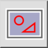
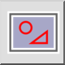
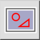
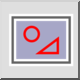

(De-)Select Rectangular Area
Toolbar / Icon:
 

Menu: Select > (De-)Select Rectangular Area
Shortcuts: T, R | T, W
Commands: selectrectangle | selectwindow | tr | tw
Toolbar / Icon:
 

Menu: Select > (De-)Select Rectangular Area
Shortcuts: T, R | T, W
Commands: selectrectangle | selectwindow | tr | tw
Selects all entities that are within a given rectangular area.